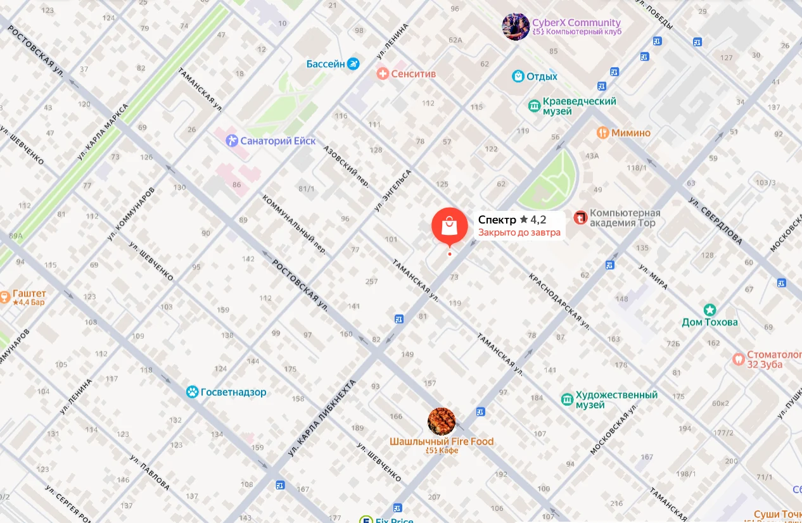

г. Ейск, ул. К. Либкнехта, 70
Ейск · Краснодарский край
Пн–Пт: 09:00–18:00, перерыв 13:00–14:00
Сб: 09:00–14:00
Вс: выходной
Выбрать пластиковые окна в Ейске можно в салоне «Спектр» на улице Карла Либкнехта, 70. Специалист поможет сопоставить профиль, стеклопакет и схему открывания.
Ейский офис представляет «Спектр» в Краснодарском крае. По будням предусмотрен перерыв с 13:00 до 14:00, в субботу салон работает до 14:00.

Ейск · Краснодарский край
Пн–Пт: 09:00–18:00, перерыв 13:00–14:00
Сб: 09:00–14:00
Вс: выходной
Пластиковые окна ПВХ из профилей REHAU и PRO WINS, балконные блоки и остекление по индивидуальным размерам. Комплектацию подбираем под помещение, шум с улицы и нужное открывание.
Посмотреть оконные системы ↗Пришлите фото и примерные размеры, укажите адрес объекта. После замера согласуем изделие, монтаж и дополнительные работы. Уточните, нужны ли демонтаж, подоконник, отлив, сетка и откосы.
Как проходит установка ↗В каталоге указан ориентир на изделие — от 6 500 ₽ / м² без монтажа и доставки. Это не цена окна с установкой: итог зависит от размеров, профиля, стеклопакета, числа створок и состава работ.
Рассчитать своё окно